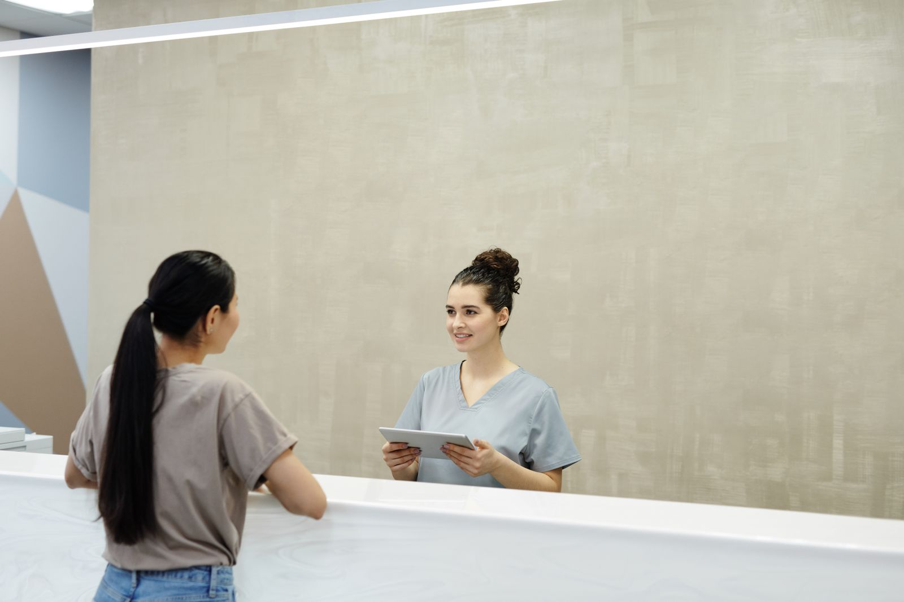

Лечение, которое не приходится откладывать из-за цены
Подбираем клинику под ваш случай, заранее считаем смету «под ключ» и сопровождаем 24/7. Без виз, перелёт из Москвы — 2,5–3 часа.
Как мы сопровождаем вас от первого вопроса до дома
С MedBridge Tourism вам не нужно разбираться во всём в одиночку. Мы — ваш проводник: берём на себя организацию, а решения всегда остаются за вами и врачом. Вот как проходит путь.
1. Разбираемся в вашей ситуации
Вы пишете нам в мессенджере или оставляете заявку. Координатор спокойно расспрашивает о задаче, при необходимости просит снимки или выписки и передаёт их в клиники — бесплатно и без обязательств.

2. Подбираем клинику и считаем смету «под ключ»
Показываем 1–2 подходящие клиники-партнёра, ориентир по плану лечения от врачей и прозрачную смету: лечение, перелёт, проживание, трансферы. Вы заранее видите, из чего складывается сумма.

3. Готовим поездку и встречаем в Ереване
Записываем на удобные даты, помогаем с билетами и жильём, встречаем в аэропорту. На приёмах и в клинике рядом русскоязычный персонал и ваш координатор — на связи 24/7.

4. Возвращаем домой и остаёмся на связи
После процедуры провожаем домой и не пропадаем: помогаем держать контакт с клиникой по рекомендациям и контрольным вопросам. Лечение завершилось — а поддержка остаётся.
Направления, с которыми мы помогаем
Мы работаем там, где Армения даёт настоящую пользу пациенту из России — по цене, доступу или сервису. По каждому направлению подберём клинику под ваш случай.
Стоматология
Импланты, виниры, коронки и протоколы All-on-4 / All-on-6 в формате «всё включено» с проживанием.
Импланты в Армении: цены →Пластическая хирургия
Ринопластика, пластика живота и век, контурные коррекции. Операционная и стационар обычно уже в цене.
Ринопластика в Армении: цены →Чек-апы и диагностика
Расширенное обследование за 1–2 дня — понять состояние здоровья, не теряя недели на очереди.
Чек-ап в Армении: цены →Плановая и общая хирургия
Лапароскопия, ортопедия и эндопротезирование суставов «под ключ». Подбираем клинику под ваш диагноз.
Рассчитать смету →Репродукция и ЭКО
Доступ к легальным для граждан РФ программам — суррогатное материнство и донорство. Полная приватность.
Подробнее об ЭКО →Почему пациенты выбирают MedBridge Tourism
Честная цена — ориентир экономии 30–60% к частной Москве
При сопоставимом уровне лечения вы видите итоговую смету «под ключ» заранее, без скрытых доплат на месте. За лечение платите напрямую клинике — наша координация для вас уже включена в пакет.
Без виз и языкового барьера
Армения — страна ЕАЭС: въезд по внутреннему паспорту РФ, без виз и лишних бумаг. В клиниках-партнёрах работает русскоязычный персонал, а координатор всегда переведёт и объяснит.
Близко и быстро
Перелёт из Москвы — всего 2,5–3 часа. Запись возможна за считаные дни, а вся поездка обычно занимает от 3 до 14 дней. Не нужно надолго выпадать из жизни и работы.
Живой человек рядом 24/7
У вас один личный координатор — не бот и не колл-центр. Он на связи от первого вопроса до возвращения домой и поддерживает контакт с клиникой после, когда нужны рекомендации или контрольный приём.
Международные стандарты и лицензии
Мы отдаём приоритет клиникам, которые подтверждают качество независимыми аккредитациями. Среди партнёров — центр с международной аккредитацией JCI и клиники, сертифицированные по ISO 9001. Все клиники работают по лицензии Министерства здравоохранения Республики Армения.
Сделайте первый спокойный шаг
Расскажите о своей ситуации — мы бесплатно подберём подходящую клинику и посчитаем смету «под ключ» за 1 день. Это ни к чему вас не обязывает: вы просто получите ясную картину и сможете спокойно решить.